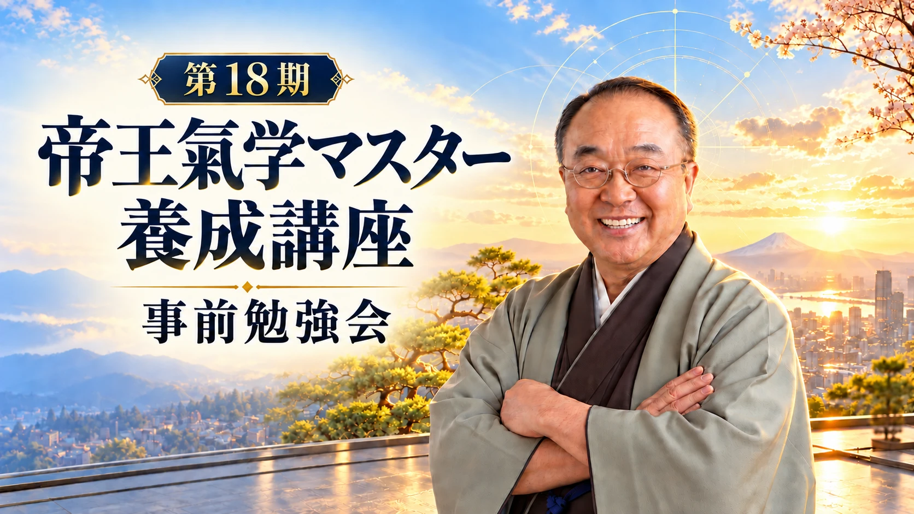
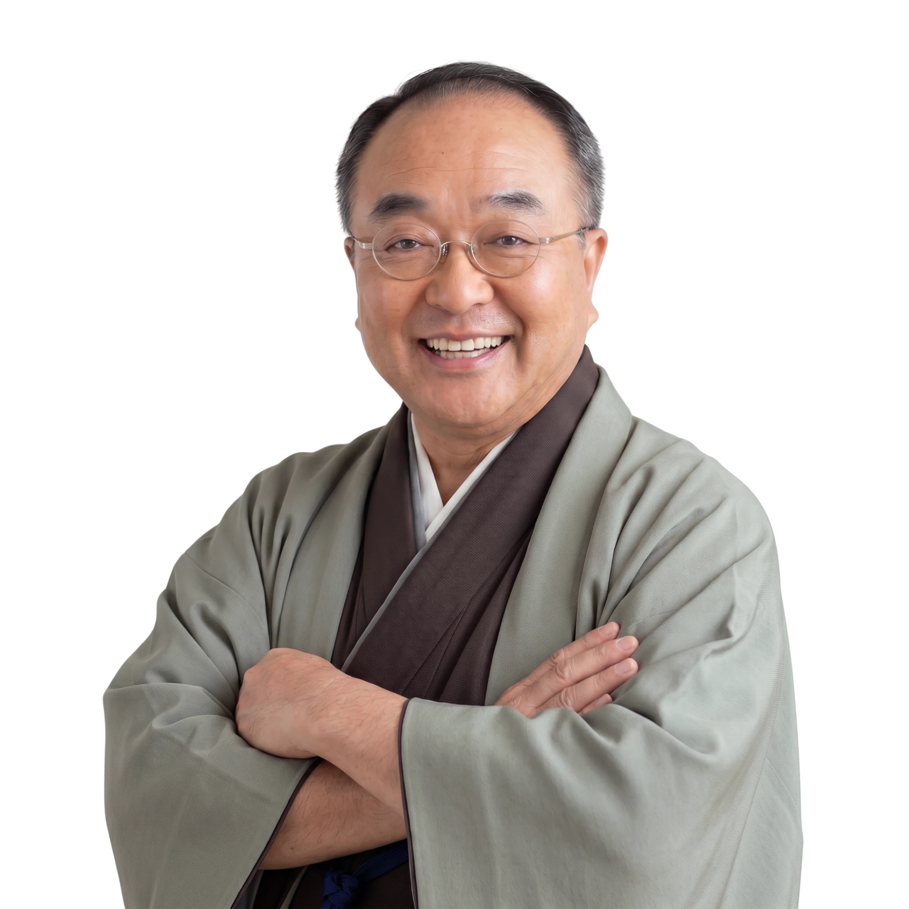

自分の天命を知り、迷いを決断に変える基準を身につける
「決めなければ」と思いながら、決めきれずにいることはありませんか。
75分のZoomセミナーで、あなた自身の迷いを題材に、判断材料を整理します。
お申し込み後、予習用ウェブセミナーと整理シートをお送りします
迷いが続くのは、能力が足りないからではありません。
判断の基準が、まだ言葉になっていないだけです。
人任せにせず、決断を整理する
自分の基準を持つ。
自分を知り、これからの一歩を
自分で選ぶ。
今の迷いを一文にし、
次に確認すべきことを一つ決める。
当日は、帝王氣学の考え方を学びながら、あなた自身の「今、決めたいこと」を題材に手を動かします。
鑑定結果を急いで示すのではなく、まず問いを明確にすることから始めます。
迷いが長引く理由をひもときます。はじめに、あなたが「今、決めたいこと」を一つ書き出していただきます。
帝王氣学が何を手がかりに天命を読み解くのか、そしてセルフ鑑定をどのように学んでいくのかを、天道象元が自身の言葉でお伝えします。
「現状／望む未来／判断に必要な情報／次の一歩」の4項目をシートに書き込み、あなたの問いを明確にします。
第18期で学ぶ内容、練習の進め方、修了時に目指す状態をご説明します。
「自分には何を、どこまで学ぶ必要があるのか」を確かめたい方に、個別相談のご案内をいたします。お申し込みは任意です。
無料PDF「迷いを決断に変える３つの整理シート」をメールでお送りします。いま抱えている迷いを一つ選んでおいてください。
帝王氣学の考え方と、講座で学ぶ範囲をまとめた短い動画です。事前にご覧いただくことで、当日は天道象元との対話や演習に時間を使えます。
あなたの迷いを題材に、判断材料を整理します。
現状と学習の目的を伺い、あなたの課題と第18期の内容が合うかを一緒に確認します。受講をお決めいただく場ではありません。
※ 個別相談では、継続してセルフ鑑定を身につけたい方にはマスター養成講座を、
まず目の前の問題を整理したい方には鑑定・コンサルティングを、というように、目的に合わせた選択肢をご案内します。
10年間で約1万名に伝えてきたメソッド
第18期のテーマは「帝王氣学を学ぶこと」そのものではなく、ご自身の課題を整理し、セルフ鑑定を使って次の行動を決められるようになることです。
日程・カリキュラム・受講料などの詳細は、フロントセミナー当日にご説明します。

てんどう・しょうげん
迷いを、決断に。
決断を、成果に。

あなたにじっくり寄り添い、耳を傾け、心の中にあるものを整理しながら、進むべき道を一緒に描いていきます。
ご都合の良い回をお選びください。内容はいずれの回も同じです。
各回 定員○名／満席の回は申込ページに表示されません。
| 回 | 開催日 | 時間 | 定員 |
|---|---|---|---|
| 第1回 | 調整中 | 14:00 – 15:15 | 調整中 |
| 第2回 | 調整中 | 20:00 – 21:15 | 調整中 |
| 第3回 | 調整中 | 14:00 – 15:15 | 調整中 |
| 第4回 | 調整中 | 20:00 – 21:15 | 調整中 |
お申し込みは1分で完了します
決断は、才能ではありません。
自分を知り、判断の基準を持てば、
次の一歩は自分で選べるようになります。
まずは75分。
あなたの迷いを一文にするところから、ご一緒します。
お申し込み後、整理シートPDFをすぐにお届けします
※ 本セミナーおよび講座は、帝王氣学の考え方とセルフ鑑定の方法を学ぶものであり、
特定の成果（収入・業績など）を保証するものではありません。